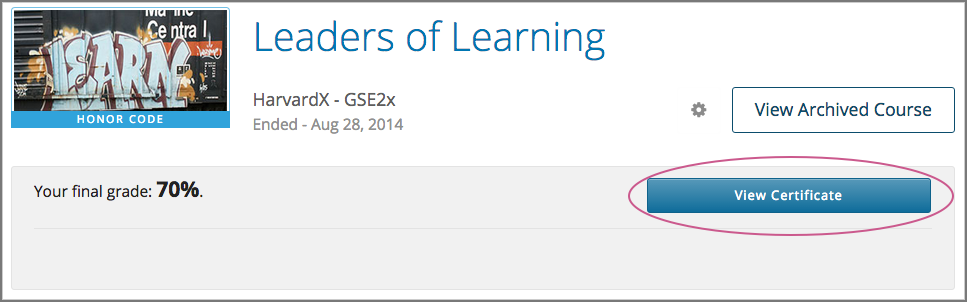
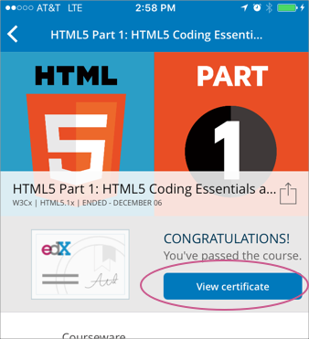
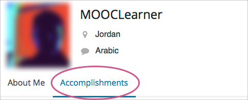

8. Getting a Course Certificate or Badge#
Your course might be set up to issue certificates as evidence that you successfully completed the course. Different types of certificates might be available for courses you take. For information about the certificates that your course offers, contact the course team or institution that created your course.
In addition, you might be able to earn badges for achievements such as completing a course or a series of courses, or for participating in course activities. The badges that you can earn depend on how badges have been set up for the course platform that you are taking a course on.
8.1. Accessing a Certificate#
Some courses issue certificates, which you can access from your dashboard.
The following examples show the View Certificate option on a learner dashboard on the edx.org website and on the mobile app.
 {kind=link}
{kind=link}
To open a web certificate in your browser, select View Certificate. You can then share or print your web certificate.
{kind=link}
8.1.2. Print a Web Certificate#
To print a web certificate, follow these steps.
Open the web certificate in your browser.
In the web certificate header, select Print Certificate.
To print your web certificate in the most professional looking format, follow these guidelines.
Do not print the header or footer. Depending on your system, you might need to clear these print options.
Set the margins to the minimum space available. Depending on your system, you might need to select the Minimum option for the margins.
8.2. Viewing Earned Badges in Your Profile#
If badges are available for your courses, you can see the badges you have earned in the Accomplishments section of your profile.
{kind=link}
8.3. Sharing Badges on Mozilla Backpack#
You can share any badge that you earned, including certificate badges, to a badging site such as Mozilla Backpack.
8.3.1. Share Badges From Your Profile#
To share badges from your profile to the Mozilla Backpack site, follow these steps.
Note
You have to create an account on Mozilla Backpack before you can share your badges.
On your profile, select Accomplishments.
For the badge that you want to share, select Share, or on the edX mobile apps, select the Share icon.
The following examples show the Share options for badges on the edx.org website and on the mobile app.
{kind=link}
You see instructions for downloading your badge and then sharing it on the Mozilla Backpack site.

8.3.2. Share Certificate Badges#
Some courses that offer web certificates allow you to download a badge that represents the certificate, and then share that badge on a badging site such as Mozilla Backpack. You can download your badge as soon as your web certificate appears on your dashboard. Many courses distribute web certificates within two weeks of the course end date.
To share your web certificate on the Mozilla Backpack site, follow these steps.
On your dashboard, locate the course that you want, and then select View Certificate.
If this option is not available, the course might not have distributed certificates yet. Check your dashboard again in a few days.
On the certificate web page, select the badge sharing icon.
{kind=link}
You see instructions for downloading your badge and then sharing it on the Mozilla Backpack site. You have to create an account on Mozilla Backpack before you can share your badge.